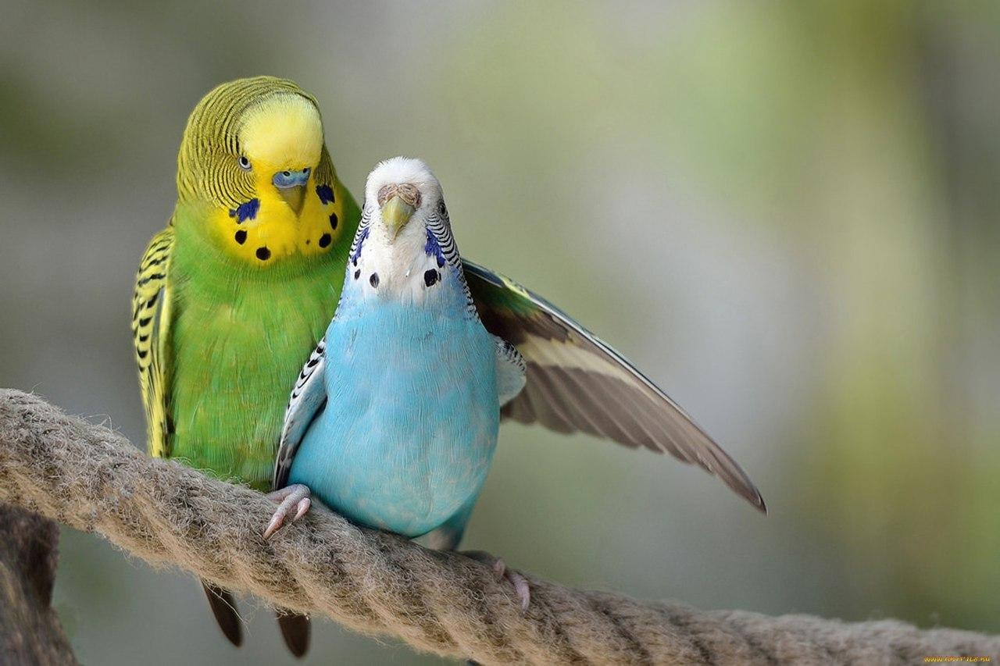
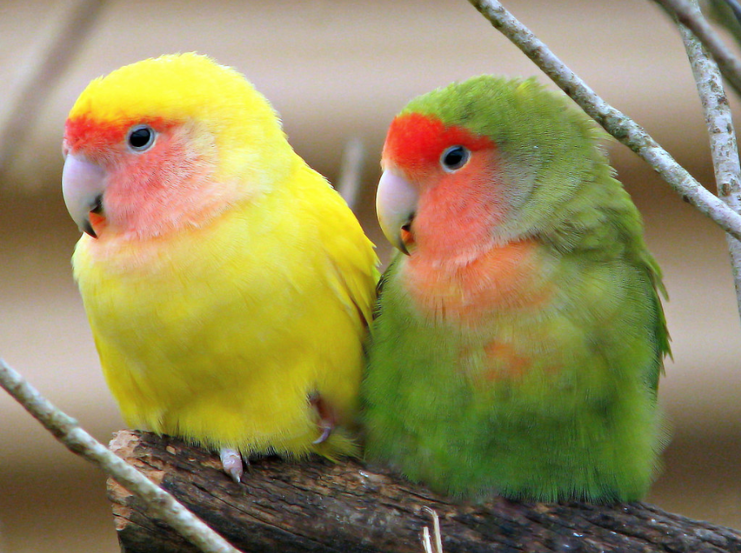

(Не найсвіжіша фото, але по крайній мірі вона стоїть у мене на Behance)
Якщо коротко, то я студенка третього курсу ГД.
Хочу бути UX/Ui дизайнером, але може мені пощастить і я стану
гейм дизайнером :)
А ось моя фотокарточка
(Не найсвіжіша фото, але по крайній мірі вона стоїть у мене на
Behance)
Я власниця 4 милих папужок. Вони вже старенькі, але за своє життя так і
не привикли до рук та не навчиличь говорити
Але я все одно їх дуже люблю :)
 
(це схематичні зображення, але запевняю, вони виглядають ну дууууже
схоже)
На кінець, хочу розказати, що іноді я люблю почитати різні книги.
Тому я розкажу які жанри мені подобаються найбільше:
Напевно один з найпопулярніших жанрів в світі. Насправді я не читала
багато книжок фентезі, але є одна, яка запала мені в душу.
Це серія книг "Відьмак".
Ну що сказати, цей жанр це любов. Я обожнюю історії Пуаро
(Персонаж з книг Агати Крісті)
Тому ось тримайте топ книг про детектива Пуаро:
Напевно найважчі для читання книги. З цього жанру я майже нічого не
читала.
Але ось з предмету проектування я зараз верстаю книгу Стівена
Гокінга "Теорія Всього"
Ось і все. Дякую за увагу :)